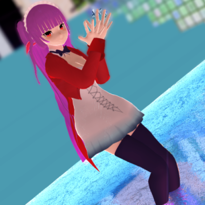

裏子たゃん
MMDモデル【裏子たゃん】は何かのチャチャチャで公開されているデスクトップマスコット Blood Tea HOUSE ver.5に基づいた二次創作モデルです

踊っている動画↓↓↓
【伺か/MMD】Lamb. 【裏子たゃん】モデル配布あり
利用規約
モデルの作者が「あやちぎん」であることを表示し、かつ非商用用途ならばモデル自体の利用は自由です。 キャラクターの権利は原作者である竜子様にあります。

あやちぎん 作『裏子たゃん』はクリエイティブ・コモンズ 表示 - 非営利 4.0 国際 ライセンスで提供されています。
http://rking.x0.com/にある作品に基づいている。
コピペ用表示
MMDモデル「裏子たゃん」
モデリング: あやちぎん(Twitter: @ayachigin, site: http://ayachigin.github.io/)
ゴースト「Blood Tea HOUSE ver.5(http://rking.x0.com/)」に基づいた二次創作モデルです
ダウンロード
更新履歴
2016年5月1日 公開